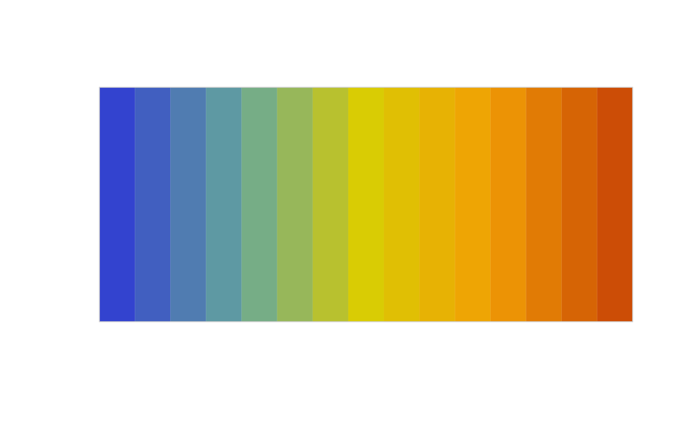

Generate a PGL-themed color palette
pgl_pals(what = NULL, who = NULL)
Arguments
| what | The object the palette was extracted from. It's sufficient to just supply this argument. |
|---|---|
| who | The person associated with the palette. This argument is optional. |
Value
A unary palette generating function that takes the number of colors to return.
Examples
library(colorspace) swatchplot(pgl_pals("blueberry_matcha_boba", "christine")())swatchplot(pgl_pals("cat_coaster", "xin")()) swatchplot(pgl_pals("cat_coaster", "xin")(15))  swatchplot(pgl_pals("hk_postcard_dull", "may")()) swatchplot(pgl_pals("hk_postcard_sharp", "may")())